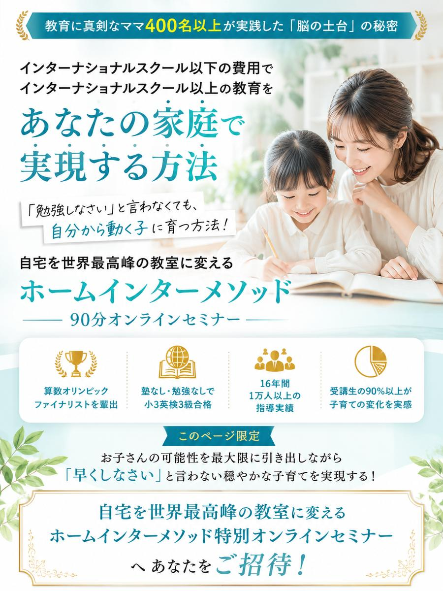
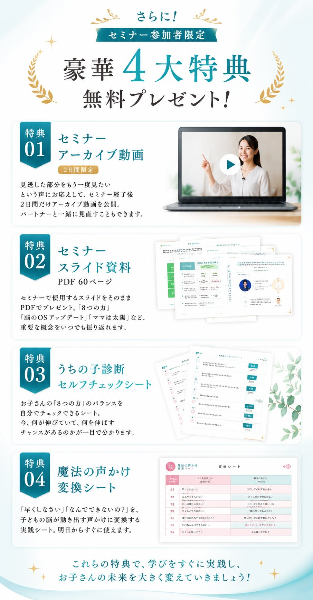
| 日程 | 時間 | 残席 |
|---|---|---|
| ○月○日(○) | 10:00~11:30 | 残席3 |
| ○月○日(○) | 14:00~15:30 | 残席2 |
| ○月○日(○) | 20:00~21:30 | 残席4 |
※日程は最新のものに差し替えてください
このページ限定で無料参加いただけます!
閉じてしまうと有料となりますのでご注意ください。本セミナーは、通常の幼児教室や英語教室では絶対に教えてもらえない「脳の土台の作り方」を90分で公開しています。
スクール受講生の90%以上が子育ての変化を実感!
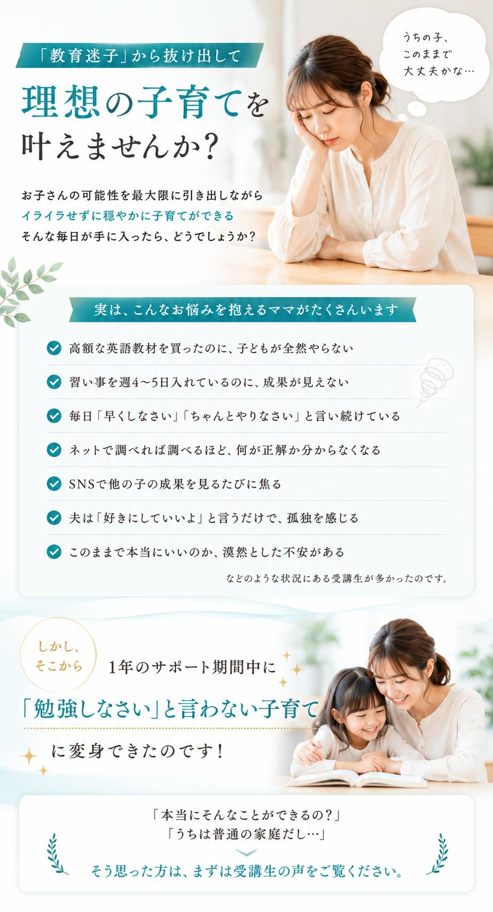
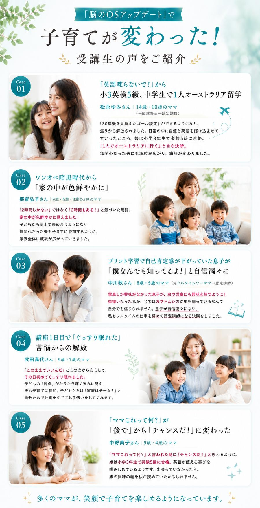
松永ゆみさん｜14歳・10歳のママ
上の娘が2歳の時に「ママ、英語喋らないで」と言われてしまい、英語への拒否反応が生まれてしまいました。
講座を受講して「30年後を見据えたゴール設定」ができるようになり、焦りから解放されました。娘は小学3年生で英検5級に合格。
中学生になった今、「1人でオーストラリアに行く」と自ら決断。さらに、育児に無関心だった夫も変わっていきました。
那賀弘子さん｜9歳・5歳・3歳の3児のママ
夫は単身赴任で何年もおらず、ワンオペフルタイムで自宅で子どもと起きて過ごす時間はたったの2時間でした。
「2時間しかない」ではなく「2時間もある!」と気づいた瞬間、家の中が色鮮やかに見えたのです。
無関心だった夫も、子どもたちに英語の本を読んだり、プールの準備をしたりと、家族全体に波紋が広がっていったのです。
中川牧さん｜8歳・5歳のママ
上の子は電車しか興味がなかったのですが、講座の動画レッスンを見ているうちに「虫って面白い!」「恐竜も!」と、興味の幅が爆発的に広がりました。
子ども自身が「僕なんでも知ってるよ!」と自信満々になり、フルタイムの仕事を辞めて認定講師になる決断をしました。
武田高代さん｜9歳・7歳のママ
男の子独自の世界に「私もう無理かもしれない」と行き詰まっていました。プリント学習を頑張らせた結果、2人とも自己肯定感が下がっていったのです。
初日で「このままでいいんだ」と心の底から安心して、その日初めてぐっすり眠れたのです。
中野美子さん｜9歳・4歳のママ
家事の忙しさに負けて、子供に「ママこれって何?」と聞かれても「後で調べるから待って」と流していました。
受講後は「チャンスだ!」と思えるように。娘は小学3年生で英検5級に合格。興味の幅を私自身が狭めていたことに気づけました。
多くのママが、笑顔で子育てを楽しめるようになっています。
子育てで成功するのに、特別な学歴も、英語力も、教育の専門知識も必要ありません!
Why? なんで言い切れるの?
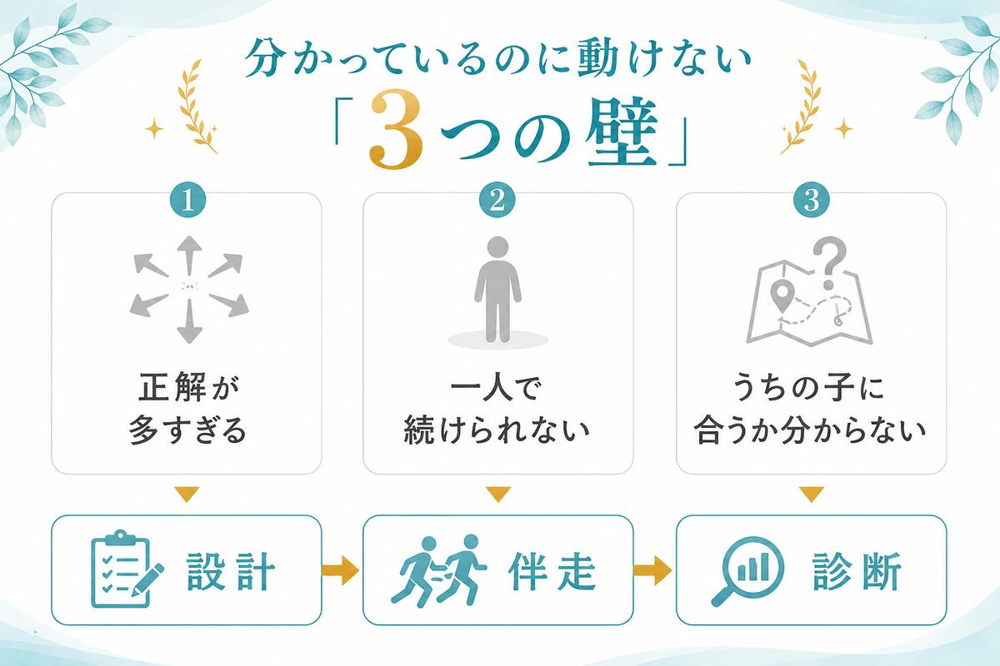
子どもは「教わる」のではなく「真似る」生き物。ママの関わり方を変えるだけで、子どもは勝手に変わっていきます。
教材には2000以上の英語センテンスがネイティブ音声付きで入っています。ママはそれを一緒に聞いて、リピートするだけ。
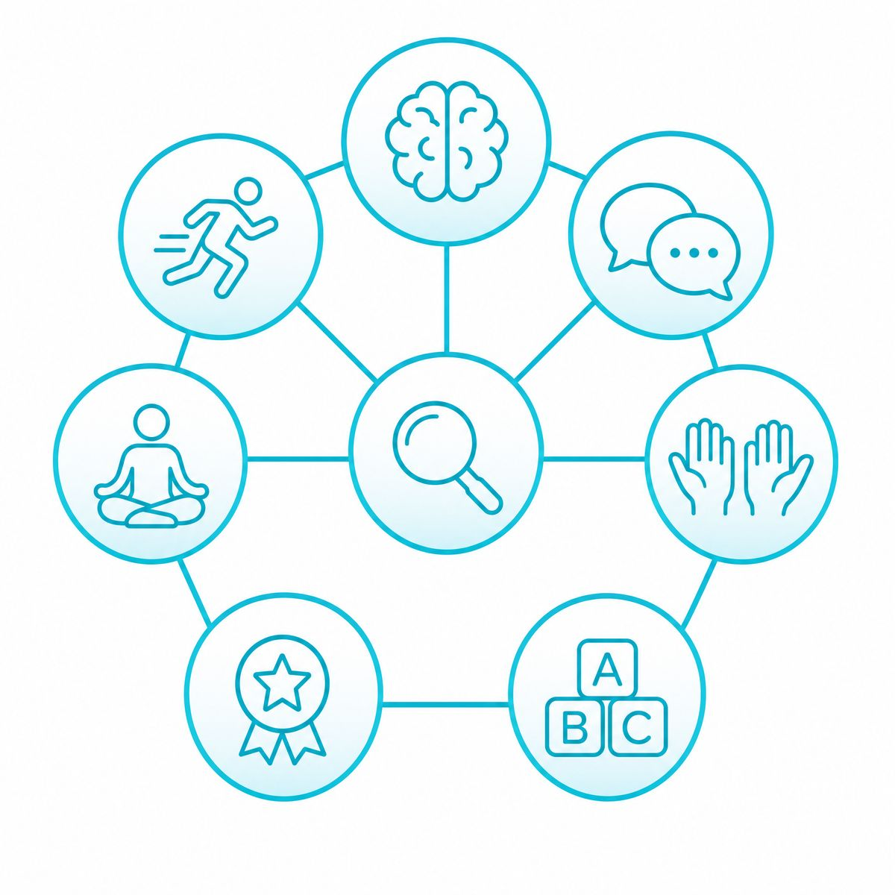
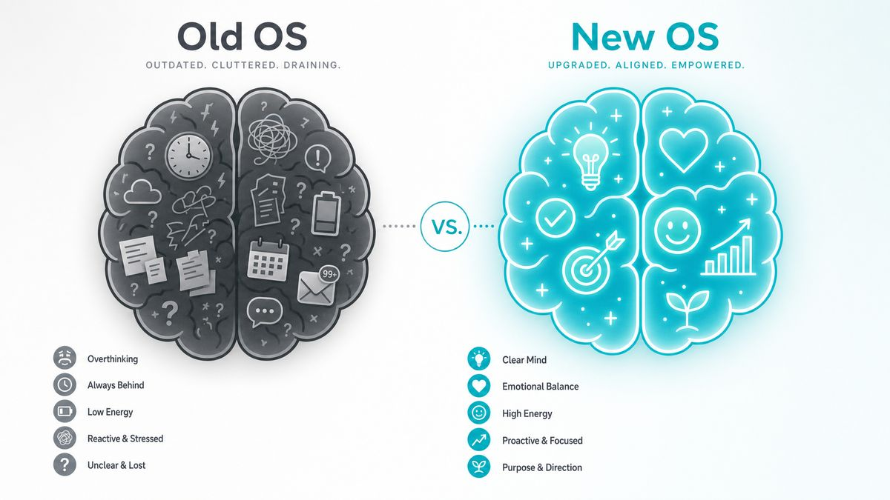
オンラインセミナーで全て公開!
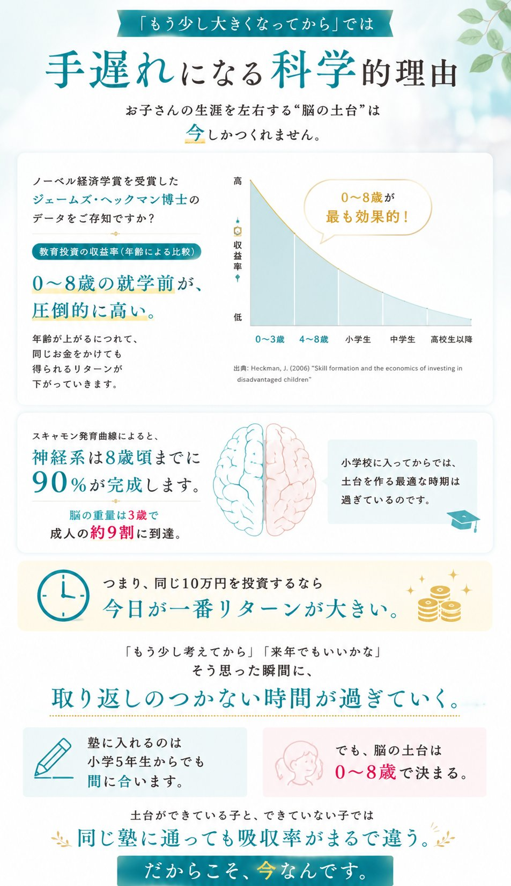
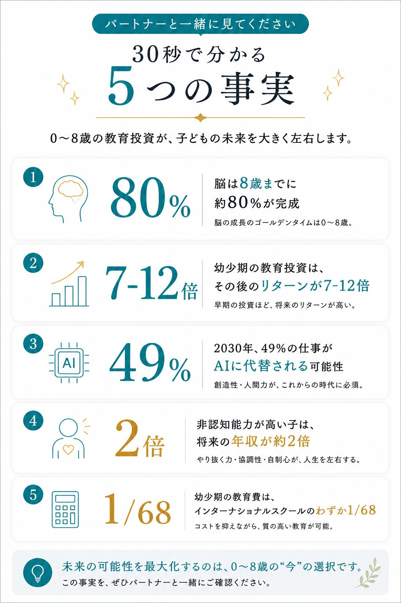
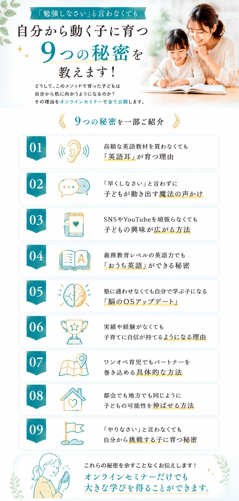
当講座で全て解決されます!
1日10分の関わり方を変えるだけでお子さんの脳のOSをアップデートする方法をお伝えしています。特別な道具も、まとまった時間も不要です。
他のスクールだと、学んだ内容を実践するのは卒業後。しかし、受講したその日から実践できる具体的な声かけや関わり方が学べるのは当講座だけです!
グローバルキッズ診断でお子さんの8つの力を数値で可視化。数字が見えると、次にやるべきことが迷わなくなります。
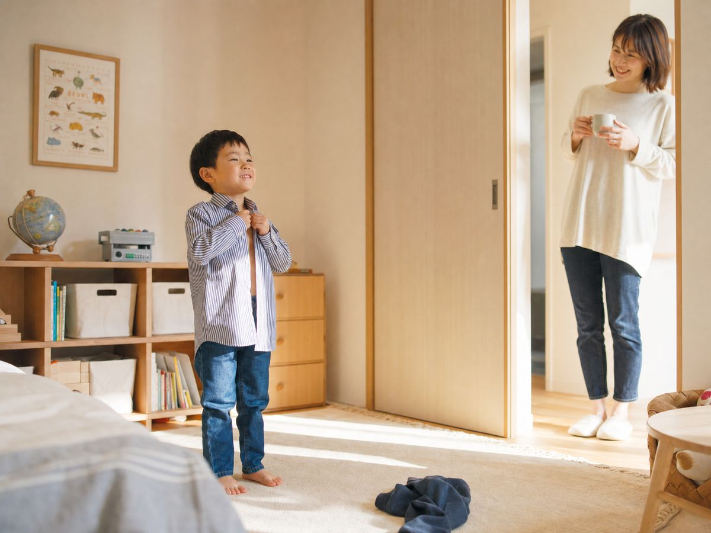
詳細はオンラインセミナーでご案内します!
こういった方はご参加をお断りする場合があります
| 日程 | 時間 | 残席 |
|---|---|---|
| ○月○日(○) | 10:00~11:30 | 残席3 |
| ○月○日(○) | 14:00~15:30 | 残席2 |
| ○月○日(○) | 20:00~21:30 | 残席4 |
最後に、お伝えさせてください!
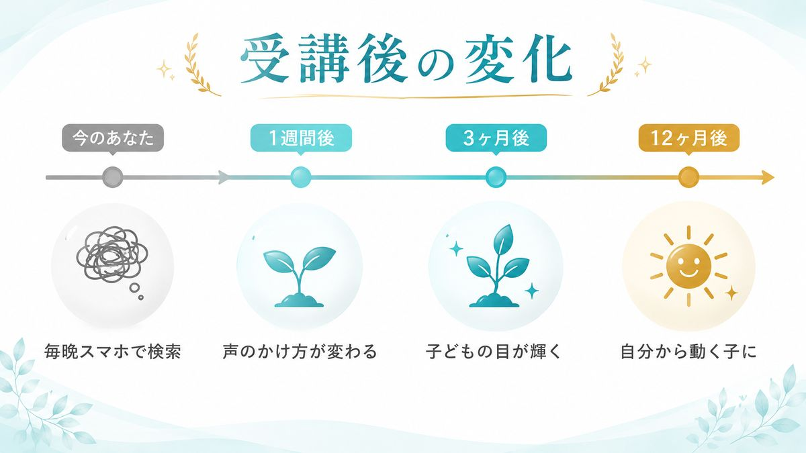
この講座で
「自分で考えて動く子」が育てば
あなた自身の人生も変わる可能性が高い
ということ。
受講生の90%以上が
子育ての変化を実感しています。
少しでも「勉強しなさい」と言わない子育てに興味があるなら、
まずはオンラインセミナーにお越しください。
各日程とも次々とお席が埋まっています。目の前のチャンスを逃さないようご注意ください。
IQ・EQ200式 ホームインターメソッド主宰
一般社団法人 Global Kids' Mom 代表理事
ピグマリオン恵美子
東京・吉祥寺にて16年間、英語スクールを経営。「入会待ち」が続く教室運営の傍ら、のべ1万人以上の親子への指導実績を持つ「現場の教育家」です。
私自身も3児の母として試行錯誤してたどり着いたのが、「頑張りすぎずに、子どもの才能を最大化する」このメソッド。
その実績は大手出版社・三笠書房様より書籍化され、多くの教育感度の高いママたちに選ばれています。TEDx登壇実績あり。
「勉強しなさい」と言わなくても自分から動く子を育てる「太陽ママ」の育成に力を入れ、全国で認定講師の養成も行っている。
228
IQ 228
統計的な「天才」領域
詰め込み教育なし
Finalist
算数オリンピック
自ら目標を立ててファイナリストへ
8
非認知能力 可視化
8つの力をバランスよく
TEDx開催実績
TEDx主催・登壇実績あり
コミュニティ活動
全国の認定講師・
受講ママ コミュニティ
このページ限定で無料参加いただけます!
閉じてしまうと有料となりますのでご注意ください。
| 日程 | 時間 | 残席 |
|---|---|---|
| ○月○日(○) | 10:00~11:30 | 残席3 |
| ○月○日(○) | 14:00~15:30 | 残席2 |
| ○月○日(○) | 20:00~21:30 | 残席4 |
子どもの一番若い日は、今日。
脳の黄金期を逃さないでください。